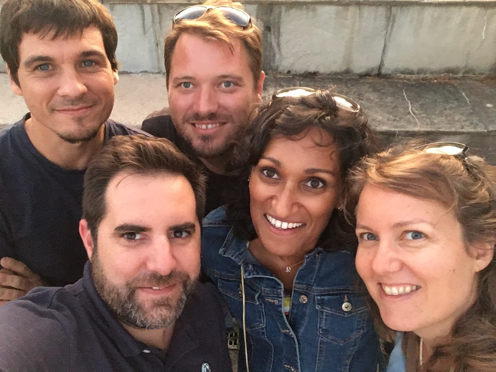

<!-- Begin Community Section -->
<section id="community" class="community">
    <div class="content-wrapper">
        <div class="col-lg-10 col-lg-offset-1">
            <a href="https://www.meetup.com/fr-FR/Agile-Pays-Basque/" style="display:inline-block;width:125px;" title="Meetup Agile Pays Basque">
                
            </a>
            <div class="logo-meetup pull-left"></div>
            <p>Nous organisons des meetups (rencontres) pour discuter, échanger et partager les valeurs de l'agilité et explorer ensemble d'autres sujets qui nous tiennent à cœur. <br/> 
                Rendez-vous sur <a href="https://www.meetup.com/fr-FR/Agile-Pays-Basque/">https://www.meetup.com/fr-FR/Agile-Pays-Basque/</a>.
               <br/>
               
            </p>
            
            <br/>
            <a href="https://agile-paysbasque.slack.com/" aria-label="Slack" data-qa="logo" style="display:inline-block;width:125px;" title="Slack Agile Pays Basque">
                <svg alt="slack" xmlns="http://www.w3.org/2000/svg" viewBox="50 0 576 270" width="125" aria-label="Slack" class="c-slacklogo--color svg-replaced" shape-rendering="geometricPrecision"><path fill="#ECB32D" d="M141.8 87.1c-1.9-5.7-8-8.8-13.7-7-5.7 1.9-8.8 8-7 13.7l28.1 86.4c1.9 5.3 7.7 8.3 13.2 6.7 5.8-1.7 9.3-7.8 7.4-13.4 0-.2-28-86.4-28-86.4z"></path><path fill="#63C1A0" d="M98.3 101.2c-1.9-5.7-8-8.8-13.7-7-5.7 1.9-8.8 8-7 13.7l28.1 86.4c1.9 5.3 7.7 8.3 13.2 6.7 5.8-1.7 9.3-7.8 7.4-13.4 0-.2-28-86.4-28-86.4z"></path><path fill="#E01A59" d="M177.2 158.6c5.7-1.9 8.8-8 7-13.7-1.9-5.7-8-8.8-13.7-7L84 166.1c-5.3 1.9-8.3 7.7-6.7 13.2 1.7 5.8 7.8 9.3 13.4 7.4.2 0 86.5-28.1 86.5-28.1z"></path><path fill="#331433" d="M102 183.1c5.6-1.8 12.9-4.2 20.7-6.7-1.8-5.6-4.2-12.9-6.7-20.7l-20.7 6.7 6.7 20.7z"></path><path fill="#D62027" d="M145.6 168.9c7.8-2.5 15.1-4.9 20.7-6.7-1.8-5.6-4.2-12.9-6.7-20.7l-20.7 6.7 6.7 20.7z"></path><path fill="#89D3DF" d="M163 115.1c5.7-1.9 8.8-8 7-13.7-1.9-5.7-8-8.8-13.7-7l-86.4 28.1c-5.3 1.9-8.3 7.7-6.7 13.2 1.7 5.8 7.8 9.3 13.4 7.4.2 0 86.4-28 86.4-28z"></path><path fill="#258B74" d="M87.9 139.5c5.6-1.8 12.9-4.2 20.7-6.7-2.5-7.8-4.9-15.1-6.7-20.7l-20.7 6.7 6.7 20.7z"></path><path fill="#819C3C" d="M131.4 125.4c7.8-2.5 15.1-4.9 20.7-6.7-2.5-7.8-4.9-15.1-6.7-20.7l-20.7 6.7 6.7 20.7z"></path><path fill="#2D333A" d="M264.8 109.8c3.8 1.7 4.1 2.9 1.1 8.6-3.1 5.8-3.8 6.2-7.6 4.7-4.7-2-10.8-3.5-14.7-3.5-6.4 0-10.6 2.3-10.6 5.8 0 11.5 36.6 5.3 36.6 29.7 0 12.3-10.6 20.5-26.4 20.5-8.3 0-18.6-2.8-25.7-6.4-3.5-1.8-3.8-2.8-.7-8.7 2.6-5.1 3.5-5.7 7.3-4.1 6 2.6 13.7 4.7 18.8 4.7 5.8 0 9.7-2.4 9.7-5.8 0-11.1-37.3-5.8-37.3-29.5 0-12.6 10.5-21 26.2-21 7.6-.1 16.9 2.1 23.3 5zM294.4 80.8V172c0 1.4-1.5 2.8-3.5 2.8h-9.6c-2.1 0-3.5-1.5-3.5-2.8V80.8c0-4.5 1.3-4.9 8.3-4.9 8-.1 8.3.5 8.3 4.9zM362.6 132v39.3c0 2.1-1.5 3.5-3.5 3.5h-9.5c-2.2 0-3.7-1.6-3.5-3.8l.1-4.2c-5.1 5.7-12.5 8.7-19.9 8.7-14.3 0-23.9-8.3-23.9-20.6 0-13.1 10.8-22 27.1-22 6.2 0 11.8 1.1 16.4 3v-4.5c0-7.2-5.7-11.5-15.4-11.5-4.5 0-10.1 1.8-14.5 4.4-3.4 1.9-4.2 1.8-7.9-3.7-3.6-5.5-3.5-6.5 0-8.8 6.7-4.3 15.7-7.1 24-7.1 18.7 0 30.5 10.1 30.5 27.3zm-44.2 22.8c0 4.7 4 7.8 9.9 7.8 7.2 0 13.8-3.5 17.6-9.4v-6.1c-3.8-1.5-8.5-2.3-12.6-2.3-9 0-14.9 4.2-14.9 10zM427.6 109.9c3.5 2 3.6 3.1-.2 9-3.6 5.6-4.2 5.9-8.1 4-2.9-1.5-7.6-2.8-11.4-2.8-12 0-20 7.9-20 19.9 0 12.4 8 20.8 20 20.8 4.2 0 9.4-1.6 12.8-3.5 3.5-2 4.2-1.9 7.9 3.5 3.3 5 3.3 6.2.3 8.3-5.4 3.7-13.8 6.5-21.3 6.5-22.2 0-37.1-14.2-37.1-35.6 0-21.2 14.9-35.3 37.3-35.3 6.8 0 14.8 2.3 19.8 5.2zM500.2 166.2c2.8 3.5 1.7 4.8-5.3 7.3-7.1 2.6-8.1 2.4-10.6-.8l-19.9-26.5-8.9 8.6V172c0 1.4-1.5 2.8-3.5 2.8h-9.6c-2.1 0-3.5-1.5-3.5-2.8V80.8c0-4.5 1.3-4.9 8.3-4.9 8.1 0 8.3.6 8.3 4.9v51.8l27.2-26.1c3-2.8 4.7-2.6 10 .9 5.9 3.8 6.3 4.9 3.5 7.6L476 134.8l24.2 31.4z"></path></svg>
            </a>
            <p>Le slack Agile-PaysBasque, est un espace de discussions et de partage. <br/> Venez lire, poser vos questions, partager vos articles ou les événements qui peuvent intéresser la communauté.</p>
            <p><b>Déjà membre ?</b><br/>
            Rendez-vous sur <a href="https://agile-paysbasque.slack.com/" target="_blank">https://agile-paysbasque.slack.com</a>.
            </p>
            <p><b>Demandez une invitation</b><br/>
                <form action="https://formspree.io/agilepb@gmail.com" method="POST" class="">
                    <input type="hidden" name="_subject" value="Demande d'invitation au SLACK" />
                    <input type="text" name="_gotcha" style="display:none" />
                    <div class="email">
                        <label for="email" class="mandatory">Adresse e-mail</label>
                        <input id="email" type="email" name="_replyto">
                    </div>
                    <br/>
                    <div class="comment">
                        <label for="comment" class="mandatory">Dites-nous, ce qui vous intéresse dans la communauté ? *</label>
                        <textarea name="comment" id="comment"></textarea>
                    </div>
                    <input class="right-nav-button btn btn-primary waves-effect waves-button waves-light waves-float pull-right" type="submit" value="Envoyer">
                </form>
                <br/>
                <p>Une fois la réponse envoyée, un membre de l'association vous enverra une invitation via slack que vous recevrez par mail.<br/> Suivez les instructions, et vous pourrez accéder en quelques clic à tout le contenu partagé par la communauté.</p>
                <br/>
        </div>
    </div>
</section>
<!-- End Partners Section -->